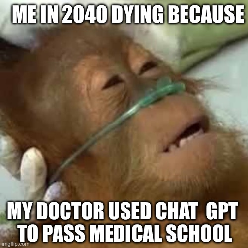

Syllabus
Course: ENST/MRNE 392 Field Research Methods
Lecture: Tues & Thurs 1:45 - 3:00 Goodpaster 198
Lab: Wed 8:00-11:10 Schaefer 112
Instructor: Dr. Cassie Gurbisz (you can call me Cassie)
Email: cbgurbisz@smcm.edu
Office hours: Wednesdays 1:00-3:00 Kent Hall 308
Website: https://MRNE392.github.io/website-2025/
Course description
In this course, you will learn methods of sampling and analyzing the natural environment with an emphasis on research question formulation and sampling design. By the end of the course, you will be able to independently design a field study, collect and analyze field data, and present their findings in a written report and poster presentation. We will focus on our local estuarine environment, although the general research process covered can be applied to any system.
Course materials and content management
The textbook for this course is Milroy, Scott: Field Methods in Marine Science ISBN 9780815344766. All other course materials and information is available on this website.
We will submit all assignments, unless otherwise specified, using Google Classroom. I’ll invite everyone to join our Google Classroom interface during the first week of class. Your grades will be posted and regularly updated in Google Classroom.
Working outside
This course involves a lot of outdoor work. Sometimes the weather will be beautiful, but it can also be hot, sunny, buggy, cold, wet, windy, or a combination of these uncomfortable conditions. We will go out rain or shine unless the conditions are unsafe. It is important that you come to lab prepared with whatever you need to keep yourself safe and comfortable outside. It’s always a good idea to have a hat and sunscreen and a waterproof layer, even if rain is not in the forecast. If you don’t already have a waterproof rain jacket, you should get one know or have a plan to borrow one.
We will be frequently working in the marsh at Point Lookout State Park. The ground is very soggy, so you’ll need to wear rubber boots or waders. We have some you can borrow, but we can’t guarantee we’ll have your exact size available. You might want to get a pair of rubber boots if possible. Muck Boots are worth the price if you think you’ll get use out of them beyond this class, but cheap boots from Walmart or the thrift store will be fine too.
You should also generally avoid wearing cotton sweatshirts and jeans. If they get wet, they become heavy and uncomfortable. If it’s cold out, they will not keep you warm. Leggings aren’t great either because the scratchy plants can poke through the thin fabric. Hiking pants and a light long-sleeve shirt will be the most comfortable. In cooler weather, a synthetic fleece or wool jacket or pullover is ideal.
Learning outcomes
At the completion of this course, you will be able to design and conduct ecological field investigations using proper scientific methods.
Specific outcomes include being able to:
- Formulate and articulate research questions and hypotheses about observed ecological phenomena
- Develop and articulate an appropriate field study design to test hypotheses or address research questions
- Use appropriate methods to collect ecological field data
- Record and manage detailed ecological data, including field procedures, site observations and quantitative field measurements
- Analyze observational and experimental field data
- Report results in the form of a written report and conference-style poster presentation
- Collaborate effectively with a diverse team of researchers and learners
Assessment and grading
Quizzes and homework assignments (30%)
Weekly-ish quizzes and/or homework assignments are designed to 1) help the instructor monitor how well you’re learning, 2) help you monitor your own learning and make adjustments to improve, and 3) encourage you to keep up with course material outside of class. The content and format of these assessments will vary, but I’ll be clear about what you can expect for each assignment.
Make-up quizzes are generally not possible because we will go over them during the same class they were given. However, we’ll drop your two lowest quiz/homework grades at the end of the semester, so it’s not a big deal if you miss a couple. Note that Google Classroom doesn’t automatically drop your two lowest grades, so this will not be reflected in your posted grade. We’ll have to do this calculation by hand at the end of the semester.
Written report (20%)
You’ll learn how to design and conduct field research through an in-depth study of the marshes at Point Lookout State Park. We will measure several variables as a class. You’ll then work with a partner to ask a research question and answer it using a subset of the class data, and then report your findings in a scientific paper. You’ll have the opportunity to work on the paper throughout the the semester.
Poster (20%)
At the end of the semester, you’ll work in groups to present your research at the SMCM student poster symposium. The goal of the poster assignment is to demonstrate that you can clearly communicate the most important aspects of your study to a more general audience.
Take-home final exam (20%)
The take-home final exam provides an opportunity for you to show that you can apply what you learned in the course to design a field study of your own. The exam will be formatted as an abbreviated research proposal in which you ask a research question, formulate a hypothesis, and design a field study to test your hypothesis. I will provide some project ideas to get you started, or you can pose your own question.
Engagement and collaboration self-assessments (10%)
This is a very hands-on and collaborative class. You can’t demonstrate your ability to do field research if you don’t show up. Scientific research, especially in the field, is also very collaborative, so you need to be able to work with other people. You know better than anyone how you’re doing in these areas, so at the mid-point and end of the semester, you’ll reflect on your engagement and collaboration and give yourself a grade in these areas.
Grading scale
A 93-100%
A- 90-92%
B+ 87-89% B 83-86% B- 80-82%
C+ 77-79% C 73-76% C- 70-72%
D+ 67-69% D 63-66% D- 60-62%
F <60%
Policies
Late work
I encourage you to stick to assignment deadlines - they exist to keep you on track and ensure you are prepared for class. However, I also don’t believe in taking points off for work that is a few days late. Being able to stick to a deadline is not a learning outcome for the course, so I don’t deduct points for late work.
Keep in mind, though, that many assignment deadlines are set so that you are ready to participate in that day’s class activity. If you haven’t done the prep work, you won’t be able to fully participate in class. You should take this into consideration and be honest about how late work affected your participation when reflecting on your engagement.
You may also lose the opportunity to get feedback on your work if it isn’t submitted on time. Once I provide written feedback on an assignment, I will still grade late work by completing the assignment rubric, but I won’t provide detailed written feedback. We will also do peer reviews shortly after some assignment deadlines. If your work isn’t complete, you may not receive peer feedback either.
Any outstanding work from the first half of the semester that hasn’t been submitted by the semester’s mid-point of the semester will earn a zero. Outstanding work from the second half of the semester that hasn’t been submitted by the last day of class (with the exception of the final take-home exam) will earn a zero.
Absences
I don’t have a specific absence policy. You’ll reflect on how your absences from class affected your learning and, ultimately, your grade in your engagement and collaboration self-assessment. As noted above, I generally expect you to come to class and participate in fun/challenging/interesting stuff we’ll be doing! However, please don’t come to class sick. A few absences here and there are not a big deal. If you need to miss class, just let me know. I do take attendance and I will reach out if you have multiple unexplained absences to make sure you’re ok. If you miss class, please don’t ask me what you missed - it’s all in the class schedule.
Use of AI

I am wary of AI tools like ChatGPT in educational settings because they can impede your learning. If you blindly copy and paste whatever content ChatGPT generates, you are less likely to stretch yourself to construct new meaning in your brain — in other words, you will learn less — and you are less likely to retain what you do learn. We want you to come away from this course being able to think and read and write and speak with your own brain. ChatGPT can generate decent-sounding text and reading summaries, but at best the output is uninteresting and shallow. At worst, it can fabricate nonexistent or incorrect references and generate nonsensical text.
I don’t want to outright ban AI tools, but I expect that all of your work products are your own. You should not use any AI-generated text, images, etc. for any of your work in this class. Please also be cognizant of your learning. Don’t let ChatGPT make you dumb by doing all your reading and thinking for you!
Some examples of how AI can help you learn:
- You’re confused about a concept or you’re having trouble finding a coherent explanation of a particular research method. A good AI prompt may yield information that can help you grapple with difficult ideas.
- AI can help you explore research methods or data analysis approaches given specific parameters of your project.
- A good AI prompt may help you develop and assign tasks for your team.
If you’re interested, here are some resources that have shaped my thinking about AI in education:
Engaged learning
In order to maintain the depth of learning that is expected for a 4-credit course, some of your learning will take place outside of normal lecture hours. Because the course includes a lab period, most of our “engaged learning” will take place via hands-on activities during lab.
Office hours
Office hours are set times dedicated to students. This means that I will be in my office waiting for you to come by talk to me during that time! Feel free to make an appointment if you can’t make it during those times.
SMCM resources
Accommodations and Accessibility: SMCM is committed to providing access to the learning and living experience to students with disabilities and disabling health conditions. If you have received a letter from the Office of Accessibility Services (OAS), which outlines the academic accommodations to which you are entitled to and you want those accommodations to apply to this course, you MUST share your letter and meet with me to review that letter. If you suspect that you have a learning or living need related to a disability or disabling health condition that could benefit from accommodations, you should contact the Office of Accessibility Services, who can help you learn more about how to proceed. Email: adasupport@smcm.edu
Office of Student Success Services: The Office of Student Success Services (OS3) connects students to the resources, activities, services, and programs that can help students be successful, thrive, and persist to graduation. OS3 provides free tutoring services and academic coaching (strategies for time management, getting organized, overcoming procrastination, note-taking, test-taking, study skills, sleep and stress management, etc.) with professional staff and Peer Academic Success Strategies (PASS) Specialists. You may make appointments by emailing PASS@smcm.edu. To request tutoring for a specific course, email tutoring@smcm.edu. For any other help call 240-895-4388, stop by Glendening 230, or email os3@smcm.edu. Asking for help is an important skill to learn. Students who seek assistance and use the resources we have on campus tend to do better academically, socially, and emotionally than the students who do not ask for help or use the resources. Let us provide assistance and support when you need it.
The Writing and Speaking Center: Located on the first floor of the main Library, the Writing & Speaking Center offers free peer tutoring in writing and speaking. The peer tutors are students themselves, but they have completed extensive hands-on training to learn how to assist their peers at any step of the process (planning, drafting, or revising) for any writing or speaking assignment. The peer tutors will not make decisions about revision for you and will instead work collaboratively with you to discuss ideas and consider options so that you can choose how best to revise on your own. This collaborative approach is one of the best ways to help students develop their abilities because all writers and speakers need audiences—just ask the peer tutors, who often schedule tutorials with each other. To make an appointment, please visit www.smcm.edu/writingcenter and click the “Schedule an Appointment” button. If you have questions or need assistance, please contact Interim Director Amanda Taylor at apheatwole@smcm.edu.
Office of Title IX Compliance and Training: St. Mary’s College of Maryland is committed to helping create a safe and open learning environment for all students. If you (or someone you know) have experienced any form of Sex Discrimination, know that help and support are available. Sex Discrimination means exclusion from participation in or being denied the benefits of any education program or activity on the basis of sex, including sex stereotypes, sex characteristics, sexual orientation, gender identity, and pregnancy or related conditions. Sex-Based Harassment is a form of Sex Discrimination that includes the following types of conduct: quid pro quo harassment, hostile environment harassment, sexual assault, dating violence, domestic violence, and stalking.
The College strongly encourages all community members to take action, seek support, and report incidents of Sex Discrimination to the Title IX Office. Under Title IX of the Education Amendments of 1972, I am required to disclose information about such Sex Discrimination to the Title IX Office. If you would like to talk to a confidential employee who does not have this reporting responsibility, you can contact SMCM Wellness Center (240) 895-4289.
For more information about reporting options and resources at St. Mary’s College of Maryland and the community, please visit the Office of Title IX Compliance and Training.
Wellness Center: A growing number of students are experiencing mental health challenges to varying degrees. Doing what you can to stay ahead by wisely taking care of yourself will be a key to succeeding academically. Sometimes mental health challenges can affect your ability to complete required work. For example, a particular assignment might trigger anxiety for you in ways which were not anticipated. Or, maybe it becomes difficult to attend class due to mental health challenges. In any of those cases please come and talk with more or send me an email. I’ll listen and do what I can to help. The sooner you share your challenges with me, the better prepared I am to assist you. I am one of many people here at SMCM who care about you and your welfare. For further support, the Wellness Center provides numerous confidential health and counseling services including same day/next day connections to counseling by calling 240-895-4289 or emailing the Director at jljolly@smcm.edu